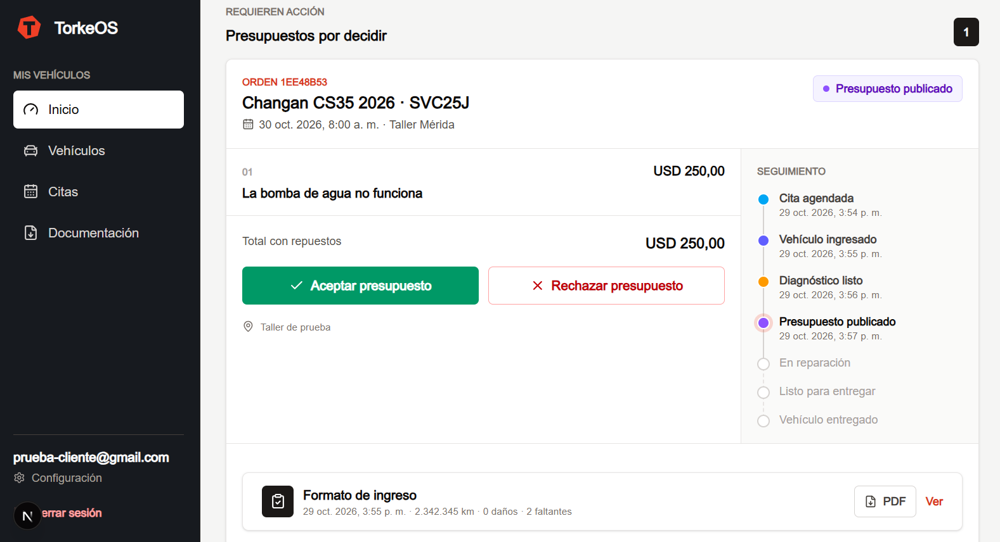
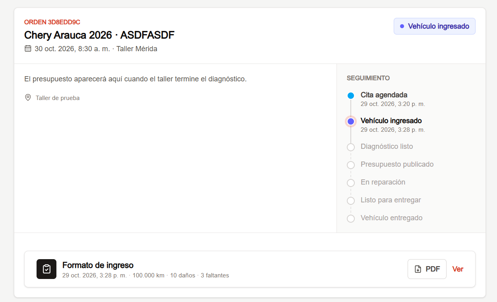
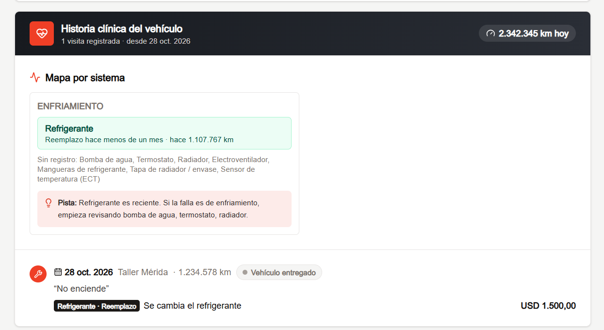

Guía completa de la plataforma para dueños de taller, encargados, mecánicos y clientes: alta del taller, planes, sucursales, horarios, agenda, órdenes de trabajo, diagnósticos, presupuestos, pagos, notificaciones y facturación.
Alta del taller y planes
Roles y permisos
Estados de una orden (ciclo del vehículo)
Guía del cliente
Guía del dueño y del encargado
Guía del mecánico
Plan, facturación y pago a TorkeOS (solo dueño)
Notificaciones, soporte y preguntas frecuentes
1. Alta del taller y planes
TorkeOS crea el taller en la plataforma; el dueño no crea su cuenta solo. Hay dos caminos para solicitarlo:
En torkeos.com/register, elegir «¿Quieres afiliar tu taller a TorkeOS?», completar el formulario (datos del taller, del dueño, plan de interés y observaciones) y pulsar Enviar por WhatsApp.
O escribirnos con el botón Soporte / WhatsApp; te enviamos la lista de requisitos y la comparación de planes.
Datos que necesitamos: nombre comercial, especialidad, dirección completa (ideal con enlace de Google Maps), nombre del dueño, cédula o RIF, correo (será su usuario), teléfono y el plan elegido.
Una vez dado de alta, TorkeOS entrega:
El acceso del dueño (correo y contraseña temporal).
Una URL única del taller (por ejemplo torkeos.com/mi-taller) para compartir con los clientes. Desde ella los clientes agendan.
El contrato de su mes de prueba gratis (30 días), con todas las funciones.
1.1 Planes
Plan
Precio (USD a tasa BCV)
Incluye
Bujía · talleres pequeños
$30 al mes
Hasta 15 vehículos al mes
Alternador · talleres medianos
$48 al mes
Hasta 40 vehículos al mes
Pistón · talleres grandes
2% de los presupuestos aceptados, mínimo $60 y máximo $150 al mes
Vehículos ilimitados
Vehículo extra sobre el límite de Bujía o Alternador: $1,99 cada uno.
Sucursal adicional: $10 al mes en cualquier plan (la principal está incluida).
Los vehículos se cuentan como órdenes creadas en el período.
Los montos están en dólares y pueden pagarse en bolívares a tasa BCV del día.
Términos y condiciones: todos los usuarios deben aceptarlos al crear su cuenta o al entrar por primera vez. TorkeOS es una prestadora de servicios tecnológicos: no se hace cargo de garantías, reparaciones ni daños ocasionados por los talleres. Pueden leerse en torkeos.com/terminos.
Importante: el cliente debe crear una cuenta y registrar el vehículo antes de poder reservar una cita.
2. Roles y permisos
TorkeOS tiene cuatro roles dentro de cada taller. Cada uno ve solo lo que necesita.
Acción
Dueño
Encargado
Mecánico
Cliente
Crear cuenta y registrar sus vehículos
—
—
—
✔
Agendar cita desde la URL del taller (y elegir sucursal)
—
—
—
✔
Crear órdenes de trabajo manualmente
✔
Su sucursal
✘
✘
Ver órdenes y agenda
Todas las sucursales
Su sucursal
Solo asignadas
Solo las suyas
Asignar mecánico a una orden
✔
✔
✘
✘
Formato de ingreso del vehículo
✔
✔
✘
✘
Registrar diagnóstico (hallazgos)
✔
✔
Solo asignados
✘
Hacer y publicar presupuestos (precios)
✔
✔
✘
✘
Aceptar / rechazar presupuesto
✔
✔
✘
✔
Horario de atención y bloqueos de agenda
✔
Su sucursal
✘
✘
Gestionar mecánicos
✔ (y moverlos de sucursal)
Su sucursal
✘
✘
Gestionar encargados y sucursales
✔
✘
✘
✘
Métodos de pago del taller y confirmar pagos de clientes
✔
Solo ve
✘
✘
Pagar una orden (en línea o en el taller)
—
—
—
✔
Durabilidad de repuestos
✔
✔
✘
✘
Plan, facturación y pago a TorkeOS
✔
✘
✘
✘
Mecánicos: solo tienen acceso al diagnóstico de los vehículos que se les asignaron. No ven precios, presupuestos, otros vehículos ni la facturación.
Encargados: cada encargado pertenece a una sola sucursal y solo ve y gestiona lo de esa sucursal.
3. Estados de una orden (ciclo del vehículo)
Cada visita del vehículo al taller es una orden de trabajo de una sucursal. La orden avanza por estos estados; el taller y el cliente ven el estado actualizado y reciben notificaciones en cada paso. Cada cambio queda registrado con su fecha y hora en el seguimiento de la orden.
#
Estado
Qué significa
Quién lo cambia
1
Cita agendada
El cliente reservó una cita, o el taller creó la orden manualmente. El vehículo aún no llega.
Cliente (al agendar) / Dueño o encargado
2
Vehículo ingresado
El vehículo llegó y se completó el formato de ingreso (kilometraje, combustible, accesorios, daños, fotos y firmas). Sin formato no se puede ingresar.
Dueño o encargado
3
Diagnóstico listo
Se registraron los hallazgos y se finalizó el diagnóstico (mínimo un hallazgo).
Mecánico asignado / Dueño o encargado
4
Presupuesto publicado
El taller puso precio a cada ítem y publicó el presupuesto. El cliente debe decidir.
Dueño o encargado
5a
En reparación
El presupuesto fue aceptado. El taller trabaja en el vehículo y el cliente ya puede pagar.
Cliente (al aceptar) / Mecánico, dueño o encargado (al volver de prueba)
5c
En prueba
Se está probando el vehículo para confirmar la reparación. Puede volver a En reparación las veces que haga falta.
Mecánico asignado / Dueño o encargado
5b
Presupuesto rechazado
El cliente rechazó el presupuesto.
Cliente (al rechazar)
6
Listo para entregar
La reparación (y la prueba, si se hizo) terminó; el cliente puede retirar el vehículo.
Dueño o encargado / Mecánico asignado (desde En prueba)
7
Vehículo entregado
El vehículo fue retirado. La orden queda cerrada en la historia del vehículo.
Dueño o encargado
Una orden abierta por vehículo: mientras un vehículo tenga una orden que no esté en «Vehículo entregado», no se puede agendar otra cita para ese vehículo.
4. Guía del cliente
4.1 Crear cuenta
Desde la URL del taller (o en torkeos.com/register eligiendo «¿Quieres agendar citas con tu mecánico?») el cliente ingresa nombre, correo, teléfono, cédula y contraseña, y acepta los términos y condiciones. Si olvida la contraseña, en el inicio de sesión pulsa «¿Olvidaste tu contraseña?» y recibe un enlace por correo.
Registro del cliente.
4.2 Portal del cliente
Inicio: los presupuestos por decidir y los servicios en curso, con su seguimiento, formato de ingreso y pago.
Vehículos: los vehículos registrados, el botón para agregar uno y la historia de cada vehículo.
Citas: todas las citas y servicios, y el formulario de Nueva cita.

Inicio: presupuesto por decidir con su seguimiento y formato de ingreso.
4.3 Registrar un vehículo
En Vehículos → Agregar vehículo elige marca, modelo, año, color y placa, y pulsa Guardar vehículo. Es obligatorio para poder agendar.
Registro de vehículo.
4.4 Agendar una cita
En Citas → Nueva cita selecciona el taller y, si tiene varias, la sucursal. Si llegaste por el enlace de una sucursal, ya viene elegida.
Elige el vehículo y la fecha y pulsa Consultar horarios. Se muestran los horarios libres cada 30 minutos dentro del horario de atención de esa sucursal (por ejemplo 8:00 AM – 5:30 PM). Si ese día está cerrado o bloqueado, se indica.
Elige un horario y pulsa Confirmar cita.
Selección de horario.Cita agendada.
4.5 Decidir el presupuesto
Cuando el taller publica el presupuesto llega una notificación y aparece en Inicio → Presupuestos por decidir. El cliente pulsa Aceptar presupuesto o Rechazar presupuesto.
4.6 Pagar la orden
Con el presupuesto aceptado y el vehículo listo para entregar, la orden muestra el bloque Pagar:
Pago en línea: elige uno de los métodos del taller (Pago móvil, transferencia, Binance, Zelle o PayPal). Si el método tiene descuento, ves el monto ya rebajado. Copia los datos, paga, sube el comprobante (imagen o PDF) y pulsa Marcar como pagado. El taller lo confirma y recibes la notificación «Pago confirmado».
Pagaré en el taller: el taller queda avisado y marca «Pago recibido» cuando pagas al retirar.
Si el taller no puede verificar un pago, te avisa el motivo y puedes reportarlo de nuevo.
4.7 Seguimiento, formato de ingreso e historia
Cada orden muestra su seguimiento con fecha y hora de cada estado. Una vez ingresado el vehículo, el botón PDF del «Formato de ingreso» permite guardarlo. Desde Vehículos → Ver historia del vehículo se ven todas las visitas e intervenciones.

Servicio en curso: seguimiento y formato de ingreso.
5. Guía del dueño y del encargado
El encargado tiene el mismo menú que el dueño, limitado a su sucursal y sin Sucursales, Pagos, Facturación ni gestión de encargados.
5.1 Órdenes
Lista de las órdenes con cliente, cita, mecánico y estado; búsqueda y filtro por estado. Con varias sucursales, el dueño ve pestañas Todas / Sucursal. Con + Crear orden se crea una orden manual: se elige la sucursal, la fecha y un horario dentro de su horario de atención, y un mecánico de esa sucursal.
Listado de órdenes.
5.2 Agenda, horario de atención y bloqueos
Agenda: citas del mes y del día, por sucursal.
Horario de atención: para cada día se marca si abre y se eligen apertura y cierre (formato AM/PM). Los clientes solo pueden agendar cada 30 minutos dentro de ese horario; la última cita es media hora antes del cierre. «Copiar a martes–viernes» repite el horario del lunes.
No disponible (bloquear fechas): vacaciones, feriados o cierres. Puede aplicar a todas las sucursales o a una. Si ya había citas en ese rango, se avisa para reprogramarlas.
Agenda del taller.
5.3 Sucursales (solo dueño)
Todo taller tiene una sucursal Principal. Con Agregar otra sucursal se crean más (nombre, dirección, mapa y teléfono); cada una tiene su agenda, su horario y su enlace de reservas (torkeos.com/mi-taller?sucursal=centro). Pueden desactivarse (la principal no). Cada sucursal adicional activa suma $10 al mes.
5.4 Equipo
Con Agregar mecánico se crea su cuenta (con especialidad y sucursal). El dueño puede mover mecánicos entre sucursales y desactivarlos. Solo el dueño puede Agregar encargado, eligiendo su sucursal.
Equipo: mecánicos y encargados.
5.5 Asignar mecánico
En el detalle de la orden, Asignar mecánico → elegir → Guardar asignación. El mecánico recibe una notificación.
5.6 Formato de ingreso (Cita agendada → Vehículo ingresado)
Vehículo: kilometraje, combustible, VIN y serial de motor, documentos y la falla que reporta el cliente.
Accesorios: desmarcar lo que el vehículo no trae.
Carrocería: marcar daños sobre el diagrama.
Fotos y notas: hasta 12 fotos con descripción.
Entrega: firmas de quien entrega y quien recibe → Guardar e ingresar vehículo.
Entrega con firmas.
El botón PDF genera el comprobante de ingreso: respaldo ante cualquier reclamo sobre el estado en que llegó el vehículo.
5.7 Diagnóstico y presupuesto
Se agregan los hallazgos con + Añadir ítem y se pulsa Finalizar diagnóstico. Luego el dueño o el encargado colocan el precio de cada ítem y pulsan Guardar y notificación de presupuesto: el cliente recibe la notificación «Tu presupuesto está listo». Opcionalmente puede enviarse también un mensaje por WhatsApp ya redactado.
Ítems de diagnóstico.
5.8 Reparación, pagos del cliente y entrega
Con el presupuesto aceptado la orden pasa a En reparación; se puede Pasar a prueba y Volver a reparación cuantas veces haga falta, y luego Marcar listo para entregar y entregado.
En la sección Pago de la orden se ve lo que reportó el cliente:
Pago en línea: método, monto, referencia y Ver comprobante. El dueño pulsa Pago confirmado (el cliente es notificado) o No llegó el pago indicando el motivo.
Pagará en el taller: cuando el cliente paga, el dueño pulsa Pago recibido.
Solo el dueño confirma pagos. El encargado los ve, pero no puede confirmarlos.
5.9 Métodos de pago del taller (solo dueño)
En el menú Pagos el dueño activa los métodos que acepta: Pago móvil, Transferencia bancaria (con varios bancos), Binance, Zelle y PayPal, cada uno con sus datos y un descuento opcional en %. Los clientes los ven al pagar.
5.10 Durabilidad de repuestos
Estadísticas de cuánto duran los componentes y marcas reemplazados, y cuántos fallan antes de 90 días.
6. Guía del mecánico
El mecánico entra con la cuenta creada por el dueño o encargado. Su menú tiene Diagnóstico y Agenda.
Solo ve los vehículos que se le asignaron y recibe una notificación con cada asignación.
Registra los hallazgos y pulsa Finalizar diagnóstico.
Con la orden En reparación, pulsa Pasar a prueba; si falla, Volver a reparación; si sale bien, Marcar listo para entregar.
No pone precios, no publica presupuestos, no ve pagos, facturación ni otros vehículos.
6.1 Historia clínica del vehículo
En cada orden asignada el mecánico ve el mapa por sistema (qué se intervino y hace cuánto), pistas para empezar a revisar y las visitas anteriores.

Historia clínica: mapa por sistema, pista y visitas anteriores.
7. Plan, facturación y pago a TorkeOS (solo dueño)
7.1 Fin del mes de prueba
Al terminar los 30 días gratis, el dueño recibe una notificación y, al entrar, una ventana le indica que el plan gratuito ya no está disponible. Elige el plan que se ajuste a su taller (Bujía, Alternador o Pistón) y el plan empieza ese mismo día.
7.2 Facturación
Tu plan: plan vigente, vehículos atendidos en el mes frente a su límite y el estimado a pagar (incluye vehículos extra, mínimo o máximo de Pistón y sucursales).
Pagos a TorkeOS: los períodos pendientes con su monto.
El detalle mensual de los presupuestos aceptados.
Mi facturación.
7.3 Cómo pagar
En Facturación → Pagos a TorkeOS, pulsa Pagar en el período.
Elige el medio de pago de TorkeOS (si tiene descuento, el monto ya viene rebajado) y copia los datos. Puedes pagar en dólares o su equivalente en bolívares a tasa BCV del día.
Sube el comprobante, agrega la referencia y pulsa Reportar pago. Queda «en revisión».
TorkeOS lo verifica y recibes la notificación «Pago confirmado». Si no se pudo verificar, te indicamos el motivo para reportarlo de nuevo.
7.4 Vencimiento y suspensión
Cada período vence el día en que cierra.
Desde el día siguiente el dueño recibe una notificación diaria de pago vencido y ve un aviso en el panel con el botón Pagar ahora.
Solo si pasan 10 días de mora, se suspende el acceso del dueño, encargados y mecánicos. El dueño puede pagar desde esa misma pantalla y el acceso se reactiva al verificar el pago.
Un pago reportado y en revisión no cuenta como mora. Los clientes nunca pierden su acceso.
8. Notificaciones, soporte y preguntas frecuentes
¿Cómo activo las notificaciones?
En el menú, debajo del nombre de usuario, pulsar Activar notificaciones y aceptar el permiso. Se activan por dispositivo. En iPhone/iPad primero hay que instalar la app (Safari → Compartir → Agregar a inicio) y activarlas desde la app instalada. En Android o computadora se instala con Instalar app en este dispositivo.
¿Qué notificaciones recibe cada uno?
Quién
Recibe
Mecánico
Cuando se le asigna un vehículo.
Dueño y encargado (de la sucursal)
Nueva cita · Vehículo ingresado · El cliente aceptó o rechazó un presupuesto · El mecánico finalizó un diagnóstico o pasó un vehículo a «En prueba» o «Listo para entregar».
Solo dueño
Recibiste un pago de un cliente · Un cliente pagará en el taller · Fin del mes de prueba · Pago vencido (diario, hasta ponerse al día) · Pago a TorkeOS confirmado o rechazado · Acceso suspendido.
Cliente
Vehículo ingresado · Diagnóstico terminado · Presupuesto listo · En reparación · En prueba · Listo para retirar · Pago confirmado / recibido / no verificado · Recordatorio 1 hora antes de la cita · Cada día a las 10:00 mientras tenga un presupuesto sin decidir o un vehículo sin retirar.
Cada persona solo recibe avisos de su taller (o sucursal) o de sus propios vehículos, y nadie recibe el aviso de una acción que hizo él mismo.
¿Cómo contacto a soporte?
Con el botón Soporte del menú (o el botón verde en las pantallas de inicio de sesión y registro) se abre WhatsApp con el equipo de TorkeOS.
¿El cliente puede agendar sin cuenta?
No. Debe crear una cuenta y registrar el vehículo primero.
¿Por qué no puedo agendar otra cita para mi vehículo?
Porque ya tiene una orden abierta. Podrá agendar de nuevo cuando el vehículo sea entregado.
Un cliente llegó sin cita, ¿qué hago?
El dueño o el encargado crean una orden manual desde Órdenes → + Crear orden.
¿Tengo que iniciar sesión cada vez?
No. La sesión queda abierta en el dispositivo hasta que se pulse Cerrar sesión.